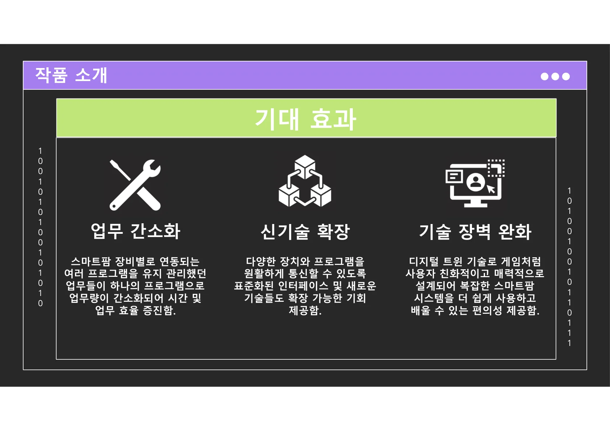
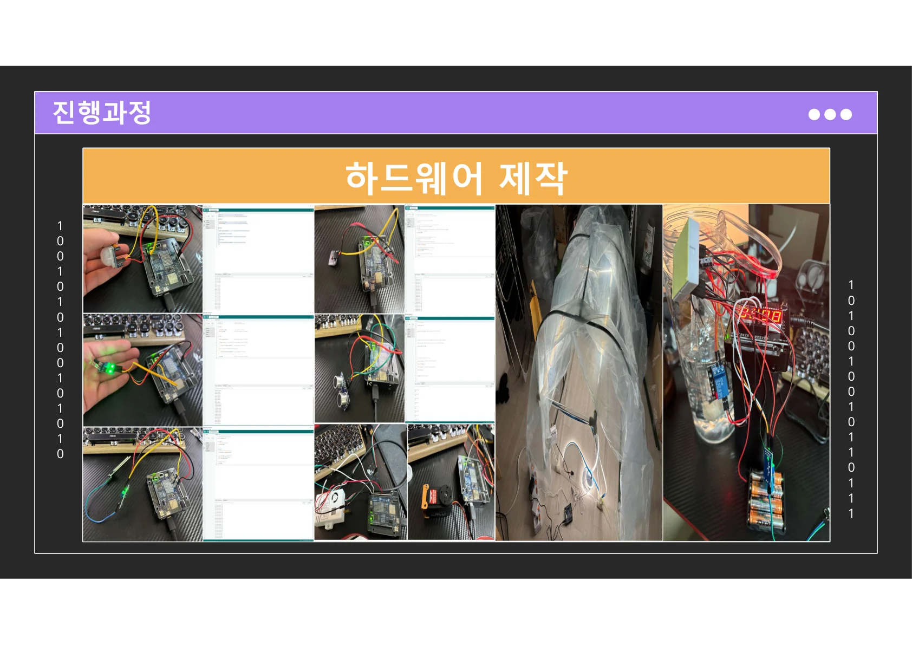
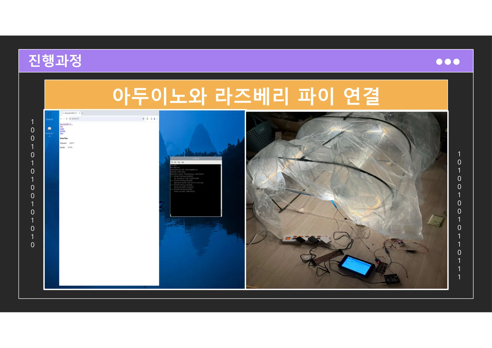
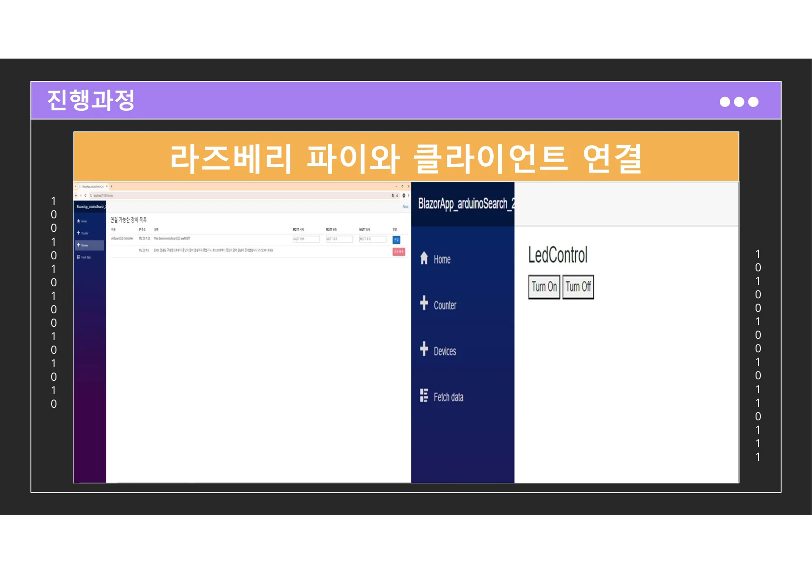
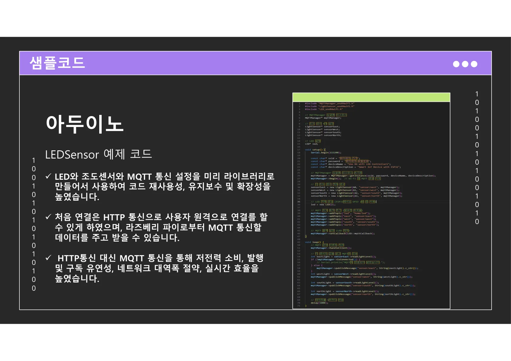
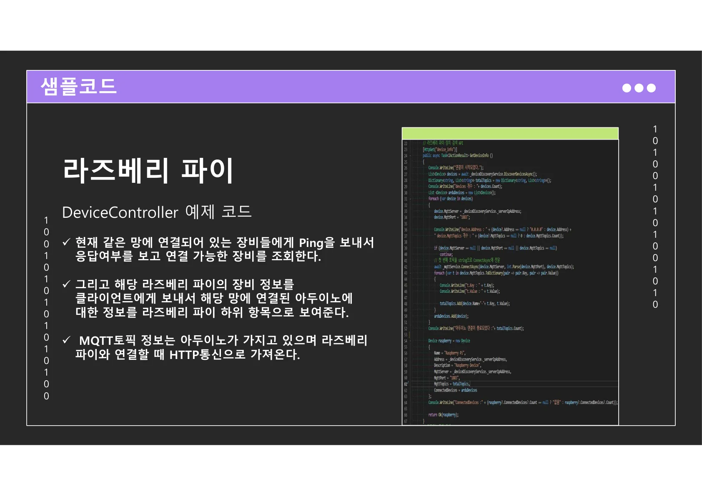
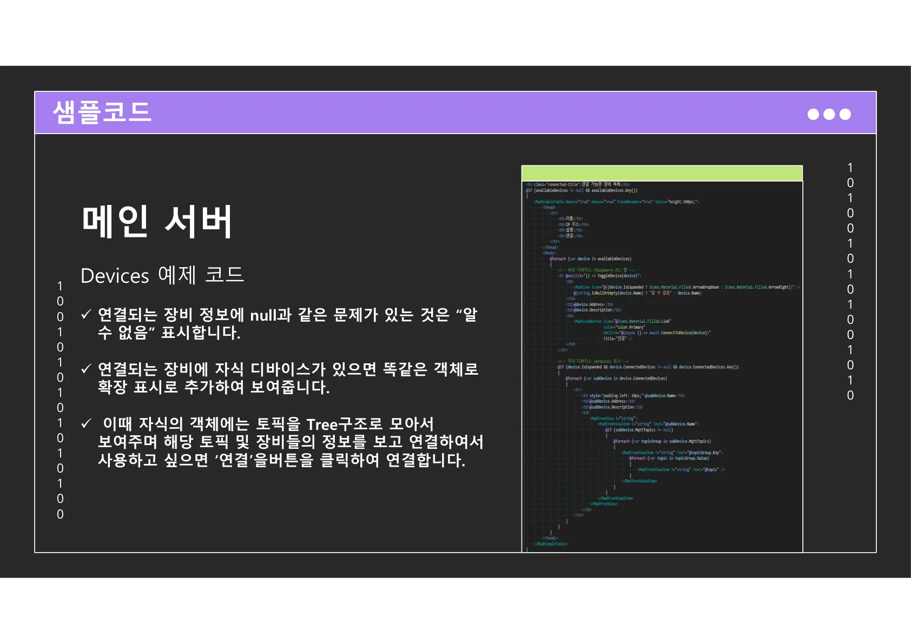
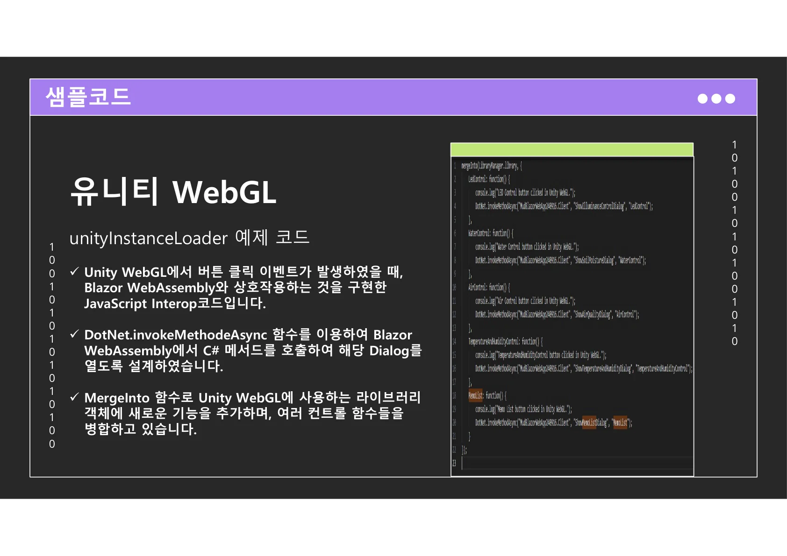

PORTFOLIO / DIGITAL TWIN / SMART FARM
스마트팜 통합 솔루션
여러 스마트팜 장비를 하나의 프로그램에서 제어할 수 있도록 설계한 디지털 트윈 기반 통합 소프트웨어 포트폴리오입니다.
문제
장비별로 분리된 운영 경험
새로운 장비가 들어올 때마다 별도 프로그램과 학습 비용이 계속 증가하는 구조였습니다.
해결
디지털 트윈 기반 통합 제어
현장 장비와 웹 클라이언트를 하나의 흐름으로 연결해 제어와 확인 경험을 통합했습니다.
효과
효율성 · 확장성 · 사용성 개선
유지 관리 포인트를 줄이고, 새로운 기술을 붙이기 쉬운 구조를 제안했습니다.
01. PROBLEM DEFINITION
기존 스마트팜 운영의 세 가지 문제
원본 자료에서는 기존 스마트팜 환경의 핵심 문제를 확장성, 제어성, 사용성으로 정리합니다.
확장성 부족
새로운 스마트팜 장비가 기존 장비와 독립적으로 개발되어 있어, 장비가 추가될수록 호환성과 운영 부담이 커지는 문제가 있었습니다.
제어 도구 분산
새로운 장비를 제어하려면 별도 소프트웨어를 추가로 익혀야 했고, 현장 사용자는 기능보다 도구 적응에 더 많은 시간을 써야 했습니다.
사용성 한계
2D 중심의 옛 UI는 실제 장비와 대응시키기 어렵고, 전문 용어나 제품명을 외워야 해서 진입 장벽이 높았습니다.
02. SOLUTION OVERVIEW
전체 장비 통합 제어 경험
이 프로젝트는 “모든 스마트팜 장비를 하나의 프로그램에서 전장 제어할 수 있는 디지털 트윈 소프트웨어”라는 방향으로 정리되어 있습니다. 즉, 장비 제어, 상태 확인, UI 경험, 확장성을 한 번에 해결하는 통합 솔루션입니다.
통합 운영
장비별 프로그램을 따로 유지하지 않고 하나의 흐름으로 묶어 운영 복잡도를 줄입니다.
게임형 UI 경험
디지털 트윈과 WebGL 시각화로 실제 공간을 더 직관적으로 이해할 수 있도록 구성합니다.
확장 가능한 구조
표준화된 인터페이스와 계층형 연결 방식으로 새로운 장치나 기술을 붙이기 쉽습니다.

기대 효과03. EXPECTED IMPACT
포트폴리오에서 강조한 기대 효과
Operational
업무 간소화
스마트팜 장비별로 흩어져 있던 운영 포인트를 하나로 모아 시간 절약과 관리 효율을 높이는 방향을 제시합니다.
Scalability
신기술 확장
다양한 장치와 프로그램이 원활하게 통신하도록 표준화된 인터페이스를 지향하며, 새로운 기술을 확장할 수 있는 구조를 목표로 합니다.
Usability
기술 장벽 완화
복잡한 시스템을 게임처럼 친화적인 화면으로 전달해 현장 사용자가 더 쉽게 배우고 사용할 수 있도록 설계했습니다.
04. ARCHITECTURE
4계층 통합 아키텍처
Arduino → Raspberry Pi → Linux Server → Client로 이어지는 계층형 구조를 통해 하드웨어와 소프트웨어를 하나의 흐름으로 통합합니다.
Hardware Layout
- 비닐하우스 구조
- LED 스트립
- 온습도 센서
- 공기질 센서
- 아크릴 파이프
Software Stack
- Arduino - 센서 제어, 와이파이 통신
- Raspberry Pi - HW 입출력 제어, 프록시 역할
- Linux Server - 데이터 저장 및 분석
- Client - WebAssembly 기반 다중 OS 접근


01
Arduino
센서 제어 / 와이파이
→
02
Raspberry Pi
입출력 제어 / 프록시
→
03
Linux Server
저장 / 분석
→
04
Client
WebAssembly / 다중 OS
05. PROCESS
프로토타입 제작부터 WebGL 적용까지
프로젝트는 하드웨어 제작, 장치 간 연결, 클라이언트 연동, UI 개선, 그리고 WebGL 기반 디지털 트윈 적용까지 5단계로 확장되었습니다.
1
하드웨어 제작
센서, LED, 구동 부품과 비닐하우스 구조를 실제 테스트 가능한 형태로 조립해 디지털 트윈 제어의 기반 환경을 먼저 구축했습니다.
- 비닐하우스 프레임과 내부 배치 구조 설계
- 센서 및 LED 스트립 배선, 전원 구성 점검
- 실물 장비와 이후 소프트웨어 연동을 위한 테스트 환경 확보

2
Arduino ↔ Raspberry Pi 연결
센서와 액추에이터를 담당하는 Arduino, 상위 제어와 중계 역할을 담당하는 Raspberry Pi를 연결해 장치 간 제어 흐름을 구성했습니다.
- 센서 입력과 장치 제어 신호 송수신 구조 설계
- Raspberry Pi를 상위 제어 노드로 두는 계층형 연결 구성
- 하드웨어 간 통신 안정성과 제어 응답 흐름 검증

3
Raspberry Pi ↔ Client 연결
클라이언트 화면에서 연결 가능한 장비를 조회하고, 기본적인 제어와 상태 확인이 가능하도록 사용자 접근 경로를 구성했습니다.
- 연결 가능한 디바이스 목록 조회 기능 구현
- 기본 제어 기능 및 상태 확인 흐름 검증
- 사용자 화면과 실제 장비 사이의 연결 구조 정리

4
Blazor UI 개선
단순 제어 중심 화면을 대시보드 형태로 재구성해 장비 상태와 센서 데이터를 더 직관적으로 파악할 수 있도록 개선했습니다.
- 제어 화면을 정보 중심의 대시보드 UI로 재정리
- 센서 데이터와 장비 상태를 한눈에 확인할 수 있도록 구성
- 현장 사용자가 빠르게 적응할 수 있는 사용 흐름 강화

5
WebGL 적용
Unity WebGL 기반 3D 화면을 도입해 디지털 트윈과 장비 제어 UI를 더 직관적이고 몰입감 있는 사용자 경험으로 연결했습니다.
- 3D 공간 시각화로 실제 장비와 화면 간 대응성 강화
- 제어 기능과 디지털 트윈 화면의 연결 경험 개선
- 기존 2D UI 대비 높은 직관성과 이해도 확보

06. SAMPLE CODE SUMMARY
워크 플로우 바탕으로 정리한 샘플 코드 영역
PDF에는 코드 스크린샷과 설명이 포함되어 있습니다. 아래 내용은 해당 설명을 웹 포트폴리오용으로 재구성한 요약입니다.
Arduino
LEDSensor 예제
- LED와 조도센서, MQTT 설정을 라이브러리화해 재사용성 강화
- 초기 연결은 HTTP 기반으로 구성하고 이후 MQTT 데이터 송수신
- 저전력, 발행/구독 유연성, 대역폭 절약, 실시간성 향상에 초점

Raspberry Pi
DeviceController 예제
- 같은 네트워크 대역의 장비에 Ping을 보내 연결 가능 장비 탐색
- 라즈베리 파이 정보를 클라이언트로 전달하고 하위 아두이노 정보를 계층화
- MQTT 토픽 정보는 연결 시 HTTP 통신으로 가져오는 구조

Main Server
Devices 예제
- null 같은 불완전한 장비 정보는 “알 수 없음”으로 표시
- 자식 디바이스가 있는 경우 동일 객체를 확장 구조로 재구성
- 토픽을 Tree 구조로 모아 사용자가 연결 버튼으로 선택할 수 있도록 설계

Unity WebGL
unityInstanceLoader 예제
- Unity WebGL 버튼 이벤트와 Blazor WebAssembly 간 상호작용 구성
- C# 메서드를 호출해 Dialog를 열도록 설계한 JavaScript Interop 예시
- Unity 라이브러리 객체에 기능을 병합해 다양한 컨트롤 함수를 연결
